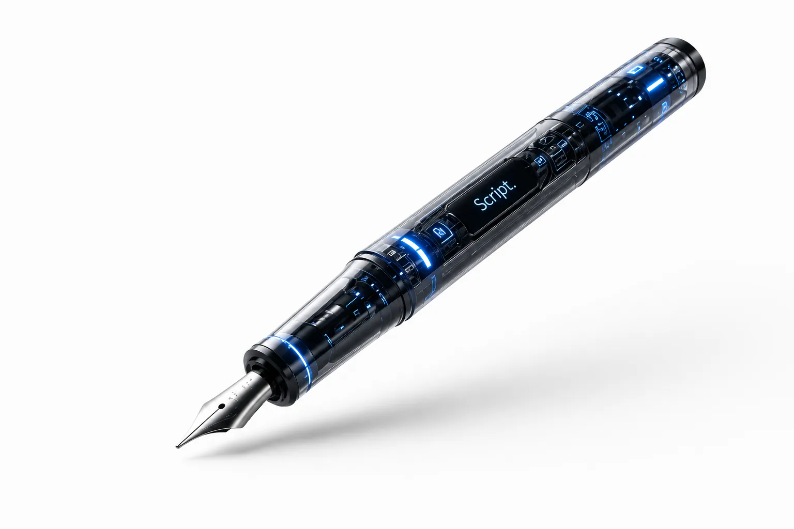
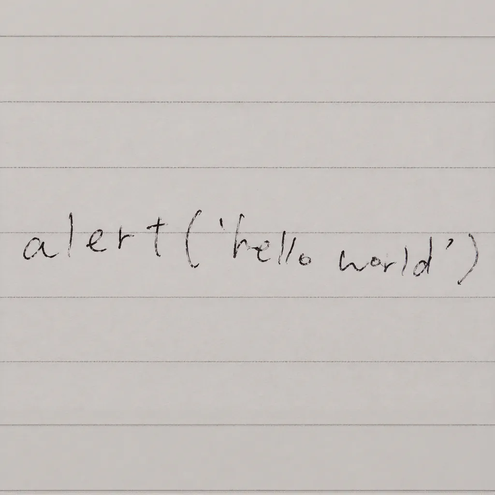
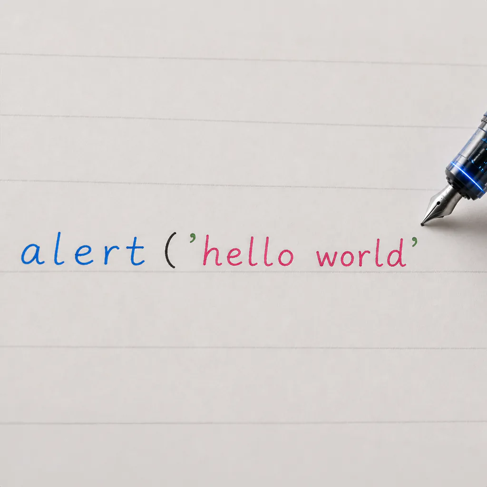
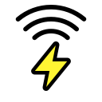

美しい文字は、 AIにおまかせ。
AIがあなたの筆跡とリズムを学習し、 読みやすく、美しい文字へと導く万年筆。

筆圧・速度・感覚を解析し、 AIが最適なバランスを導き出し、 あなたの「伝わる文字」をサポート。 あなたが書く文字を認識し、 自動で配色もサポートします。
Before

本製品使用前（筆跡の癖が強い例）
After

本製品使用後
筆圧・速度・角度を高精度に計算。 AIがあなたの癖を数値化します。

指先への電気刺激により、 最適な書き方へ誘導します。
AIが言語の種類を認識し、 自動で最適な配色を提案します。